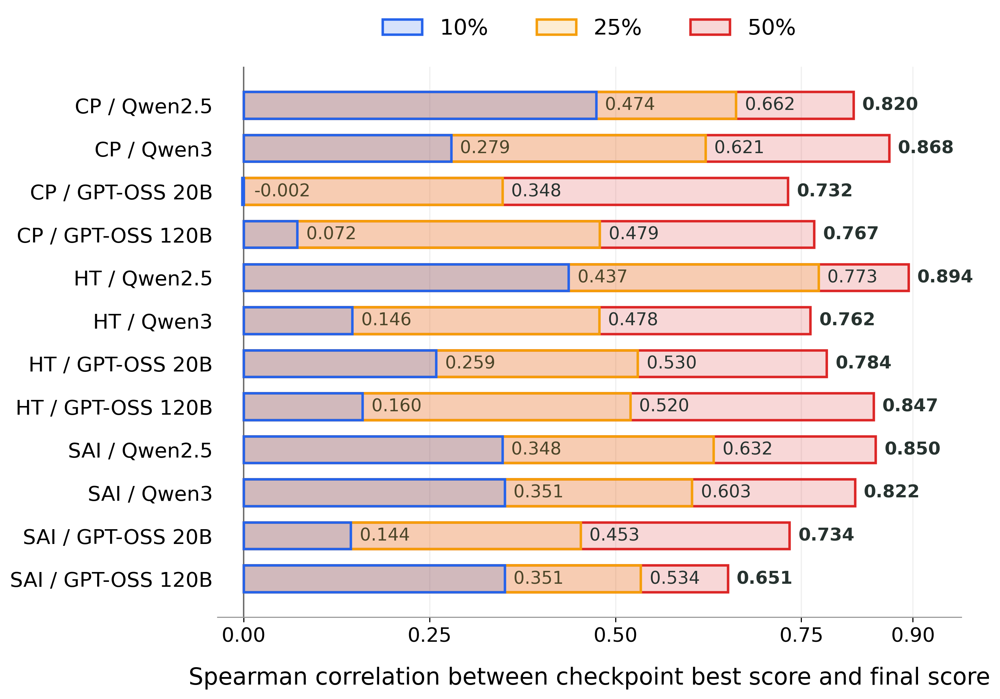
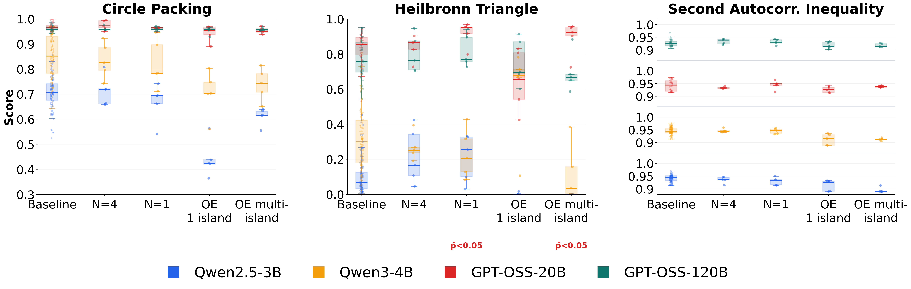

No Universally Best Harness for Automated Discovery
TL;DR
- "Automated Discovery Has No Universally Superior Harness" (Gupta, Lei, Lu, Anumanchipalli, Choshen — Berkeley AI, arXiv 2607.18235) decomposes OpenEvolve-style evolutionary search and the TTT-Discover harness into their components and evaluates 30 budget-matched harnesses across 12 model–problem pairs with 3.1M+ LLM rollouts, using repeated trials and statistical hypothesis testing.
- Findings: no fixed harness is reliably superior across model–problem pairs; more complex machinery (including OpenEvolve variants) generally underperforms simpler alternatives; harness choice behaves like a hyperparameter, not a recipe.
- Constructively: early discovery progress predicts final performance, enabling a budget-matched adaptive-allocation scheme — start several harnesses, prune weak partial runs, reallocate compute to survivors — that beats both committing to a random fixed harness and a non-adaptive ensemble. All run pools and null distributions are released as reusable statistical infrastructure.
Why this matters
Automated discovery systems — FunSearch, AlphaEvolve, and their open reimplementation OpenEvolve — are increasingly treated as general-purpose harnesses: point the evolutionary loop at a scoreable problem and let it search program space. But these systems are composites: archive design, parent selection, exploration policy, and budget allocation are bundled into one recipe, and the recipe is usually validated with a handful of expensive, highly stochastic runs. That evaluation regime cannot distinguish methodological improvements from run-to-run variance — a familiar failure mode from the deep RL reproducibility literature, now replaying in LLM-driven discovery.
For the self-improving-harness thread in this reading list, this paper is the cold shower. The thread's optimistic papers (Recursive Harness Self-Improvement, AREX, the skill self-play line) propose ever more elaborate scaffolds; this paper asks whether elaborate scaffolds beat simple ones at all once you control budget and run enough seeds — and largely answers no, not reliably, not universally. That reframes the research question from "design the best harness" to "adapt the harness to the model–problem pair," which is precisely the door RHI-style online harness optimization walks through.
The core idea
Two ideas, one methodological and one empirical.
Methodological: treat harness comparison as a statistics problem. Discovery runs are expensive and stochastic, so the paper enforces budget-matched, repeated-trial protocols with explicit null distributions and hypothesis tests. Instead of comparing whole systems as monoliths, it decomposes them into constituent choices — archive structure, parent selection, exploration, budget allocation — and builds 30 harness variants incrementally from a Sequential Best-of-N baseline up through archive elite sampling with epsilon-greedy exploration, UCT and PUCT tree search, and full OpenEvolve (MAP-Elites archives, multiple islands). This makes it attributable which component earns its complexity.
Empirical: once you do this properly, the ranking of harnesses is not stable across model–problem pairs. There is no universally superior harness; simpler systems frequently match or beat elaborate ones. The correct abstraction is harness-as-hyperparameter — and since hyperparameters can be tuned online, the paper's constructive proposal is to select among harnesses during the run using early progress as the signal.
How it works
Experimental grid. - Models (4): Qwen2.5-3B-Instruct, Qwen3-4B-Instruct-2507, GPT-OSS-20B, GPT-OSS-120B (3B–120B, all open-weights). - Problems (3): circle packing, the Heilbronn triangle problem, and a second autocorrelation inequality — score-verifiable mathematical discovery tasks of the FunSearch/AlphaEvolve genre. - Harnesses (30): budget-matched variants spanning the component ladder above, from sequential best-of-N to full OpenEvolve-style evolutionary search with MAP-Elites and islands. - Scale: 12 model–problem pairs, more than 3.1 million LLM rollouts, repeated independent trials per configuration.
The formal machinery (from the paper's full text). All 30 harnesses are unified as parent-selection rules over the history \(\mathcal{H}_t\) of evaluated programs. The Sequential Best-of-N baseline is greedy parent selection:
where \(p_t\) is the parent mutated at iteration \(t\) and \(S(x)\) is the evaluator score of program \(x\); every other harness is derived by relaxing this rule (top-\(K\) archives, \(\epsilon\)-greedy sampling from full history, UCT/PUCT subtree values, MAP-Elites + islands). Pair-level significance uses the best-of-five maximum \(T_h\) of a candidate harness against a bootstrap null built from \(n_0\) (100 or 30) Sequential BoN runs:
where \(T_r^0\) is the max of five baseline scores resampled with replacement in bootstrap trial \(r\) — no parametric assumptions, since score distributions are skewed and heavy-tailed. Cross-pair transfer is summarized by the majority-win statistic
the probability that harness \(h\)'s best-of-five vector \(\mathbf{M}^h\) beats a resampled baseline vector \(\mathbf{M}^{0,r}\) on at least 7 of 12 model–problem pairs, tested with a permutation test plus Holm correction. The headline instance: the strongest fixed harness (\(\epsilon\)-greedy, \(K{=}1\), \(\epsilon{=}20\%\)) reaches \(\widehat{P}_{\mathrm{maj}}=0.914\) with raw \(\widehat{p}_{\mathrm{cross}}=0.023\) — but after Holm correction that rises to 0.678, i.e., not even the best harness survives multiple-comparison correction.
Statistical protocol. Repeated budget-matched runs per (harness, model, problem) triple; null distributions constructed from run pools; hypothesis tests to decide whether a harness's advantage exceeds run-to-run variance. This is the part most harness papers skip: with a handful of runs, the max-over-runs statistic that discovery papers typically report is dominated by luck, and the paper's repeated-trial design is built to expose exactly that. The released run pools double as baseline null distributions, so a future harness proposal can be tested against the existing distribution for its model–problem pair without re-burning millions of rollouts — a significance test against the field's accumulated runs rather than a fresh bake-off.

Figure from the paper: checkpoint-to-final rank correlation. Spearman correlation between partial-run and final performance is weak at the 10% checkpoint but exceeds 0.70 for 11 of 12 model–problem pairs by the 50% checkpoint.
Adaptive allocation experiment. The enabling observation: early discovery progress predicts final performance. The scheme, under one matched total budget: launch multiple harnesses in parallel; monitor partial-run progress; prune the weak; reallocate the freed compute to the stronger survivors. This is successive-halving/Hyperband logic transplanted to harness selection, and it outperforms (a) committing the whole budget to one randomly sampled fixed harness and (b) a non-adaptive ensemble that splits budget evenly to the end. Note what the comparison to (a) encodes: since no harness is reliably best, a practitioner without prior knowledge is effectively sampling a harness at random, and adaptive pruning dominates that realistic baseline — not just a strawman.
A multi-stage pruning schedule with active-run counts \(m_1 > m_2 > \cdots > m_L\) between normalized checkpoints \(0 = q_0 < q_1 < \cdots < q_L = 1\) must satisfy the matched budget
where \(B_e = 5\) full-run equivalents (matching the paper's standard best-of-five evaluation) and \(m_L = s\) is the number of survivors completed to 100%.
Algorithm (adaptive harness ensemble, condensed from the paper):
Budget: B_e = 5 full-run equivalents
1. Sample m1 harness configs from the pool (m1 can exceed 5 -- runs are partial)
2. Advance all m1 runs to checkpoint q1 (e.g., 25% of a full run)
3. Rank partial runs by best evaluator score so far
4. Keep top m2, advance to q2 (50%); prune again at q3 (75%) ...
5. Complete the s survivors to 100%,
subject to sum_l m_l * (q_l - q_{l-1}) <= B_e
6. Return the best final score found
Best schedule found: 12 -> 5 -> 2 -> 1, pruning at 25/50/75%:
avg score 85.75% vs 84.54% (unpruned ensemble), 84.35% (Sequential BoN x5),
82.49% (commit to one randomly sampled harness)
Results

Figure from the paper: progression toward OpenEvolve-style search — configurations progressively shift budget from breadth to depth and add MAP-Elites, inspiration sampling, and islands; added complexity does not produce monotonic gains, and full OpenEvolve variants often underperform simpler intermediates.
Numbers and findings actually present in the sources:
- Scale of evidence: 30 harnesses × 12 model–problem pairs, >3.1M rollouts, repeated-trial statistical analysis.
- No fixed harness is reliably superior across the evaluated model–problem pairs; the best choice changes with both model and problem.
- OpenEvolve variants generally underperform simpler alternatives — greater harness complexity does not reliably buy discovery performance under matched budgets.
- Early progress predicts final performance, and the adaptive-allocation scheme built on it outperforms both a randomly sampled fixed harness and a non-adaptive harness ensemble at matched budget. (The sources give the ordering, not effect sizes — pull magnitudes from the paper.)
- Artifact: all run pools, including per-pair baseline null distributions, are released as reusable statistical infrastructure for evaluating future harness proposals.
How it connects
- Recursive Harness Self-Improvement (this list): this paper supplies RHI's premise. If no fixed harness generalizes, per-task harness adaptation is forced; RHI adapts by rewriting a prompt-level harness, whereas this paper adapts by selecting among discrete harnesses online. Rewriting vs. selecting are the two ends of the same adaptation spectrum.
- Harness Handbook (this list): if harness choice is a hyperparameter that must be re-tuned per deployment, harness modification becomes frequent — which is exactly the workflow the Handbook's behavior-localization infrastructure accelerates.
- OpenForgeRL (this list): finds the training-side analogue: harness choice materially changes what RL can learn, and some harnesses are much harder to learn in than others. Together the two papers say harness choice is a first-class variable at both inference and training time.
- Evolving-benchmarks and self-improvement survey (this list): the statistical-infrastructure release addresses the same meta-problem — self-improvement claims outpacing the rigor of their evaluation.
- Well-known prior work: FunSearch (Romera-Paredes et al., 2023) and AlphaEvolve (DeepMind, 2025) established LLM-driven evolutionary discovery; MAP-Elites (Mouret & Clune, 2015) and island models are the quality-diversity machinery OpenEvolve inherits; successive halving/Hyperband (Jamieson & Talwalkar; Li et al.) is the direct ancestor of the adaptive-allocation scheme; and the "deep RL that matters" reproducibility critique (Henderson et al., 2017) is the closest methodological precedent. The no-free-lunch framing (Wolpert & Macready) hovers over the title, here established empirically for a specific, practically important search family.
Critical take
- Domain narrowness. Three problems, all compact mathematical-construction tasks with cheap exact scoring. Whether the "no universal harness" conclusion transfers to software engineering agents, scientific discovery with expensive/noisy evaluation, or long-horizon tool-use tasks is open — the statistical methodology transfers; the finding may not.
- Open-weights, mid-scale models only. 3B–120B open models. Frontier closed models with much stronger in-context search behavior might flatten harness differences (or amplify them); the model axis here is narrower than the conclusion's phrasing suggests.
- Budget-matching semantics. Matching on rollouts is one choice; harnesses differ in tokens per rollout, parallelism, and wall-clock. Different budget definitions could reorder the rankings — worth checking which the paper uses and how sensitive conclusions are.
- Early-progress prediction can be gamed by landscapes. Deceptive fitness landscapes are the canonical case where early leaders plateau and exploration-heavy methods win late; the adaptive-allocation result is only as robust as this correlation across problem types.
- A negative result invites survivorship in reverse. The 30 harnesses are decompositions of two existing families (OpenEvolve, TTT-Discover). A genuinely different harness class — e.g., RHI-style self-rewriting scaffolds — is outside the tested space, so "no universally superior harness" is proven over this family, not over all harnesses.
If you remember three things
- Under budget-matched, repeated-trial, hypothesis-tested evaluation — 30 harnesses, 12 model–problem pairs, 3.1M+ rollouts — no discovery harness wins universally, and OpenEvolve-style complexity generally loses to simpler search.
- Treat harness choice as a model–problem-specific hyperparameter, and exploit the fact that early progress predicts final performance: prune-and-reallocate across harnesses beats committing to any fixed one at the same budget.
- The released run pools and null distributions are the field's first shared statistical infrastructure for harness claims — hold future harness papers (including the self-improving kind) to that bar.